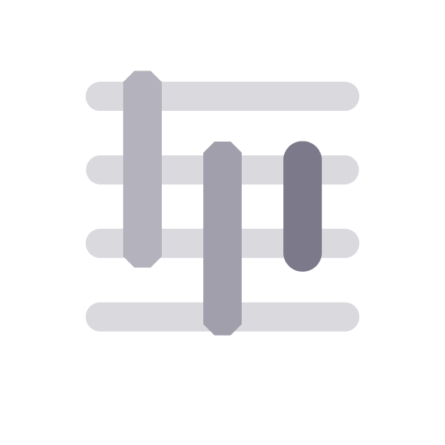

Explore
Cultures
See how projects and activities interlink and create knowledge both internally and externally.
View

Processes
Find out how various activities, departments and cooperations develop across various timespans.
View
Discoveries
Browse the latest in project-led discoveries, automatically generated from our database.
View